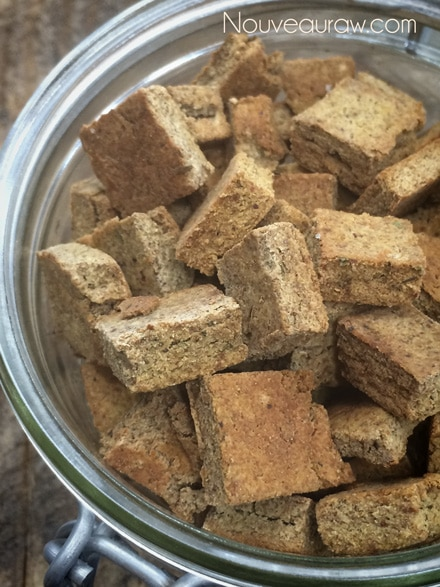

Italian Seasoned Croutons – using almond pulp

~ raw, vegan, gluten-free ~
The base of these crackers is made from almond pulp, which is the by-product of making almond milk. You can do a lot with this stuff so never throw it away after making almond milk, or any nut milk actually.
I never really knew how much I had missed the flavor and texture of a crouton until one accidentally found its way into a salad that I ordered at the restaurant. It has been years since I last had gluten, so this recipe is a real treat! Be warned, once they are done, get them into a container and lock them up! They are addicting to just nibble on!
I went ahead and worked up the nutritional data but I have to say that it might not be 100% accurate. Getting the nutritional value of almond pulp isn’t so easy. When you make almond milk and strain it, some of the fat goes into the milk and I am sure some stays behind.
Same thoughts with all the other nutrients. So use the numbers below as a guideline. I also just did it for the whole recipe. Just divide your quantity into the whole number to get your serving size.
I found the nutritional info for the almond pulp on three different sites that all match, not sure how they figured it out but again, use it as a base guideline.
Nutritional Data
Whole recipe: Calories 2,326 / Fat 192 g / Carb 139 g / Fiber 71 g / Protein – unknown
Ingredients:
Yields: 1 dehydrator tray
Preparation:
- In a large bowl combine all of the almond pulp, nutritional yeast, Bragg’s, and seasonings. Mix well. I used my hands to make sure it was well incorporated.
- Dehydrator method:
- Place batter on the teflex sheet that comes with your dehydrator, press it out with your hands.
- Place a second teflex sheet over the top of the batter and using a rolling pin, roll out nice and evenly. The thickness is whatever you desire.
- Remove the top teflex sheet after rolling it out and using a pizza cutter or off-set spatula, create small squares.
- Dehydrate at 145 degrees for 45 mins, then reduce to 115 degrees and dehydrate until dry.
- Oven method:
- Lightly grease a cookie sheet and set aside.
- Sandwich the dough between two pieces of parchment paper and roll the batter to about 1/4-1/2″ thick. Score into shapes and sizes that you want.
- Remove the top layer of parchment and place the inside of the cookie sheet on top of the croutons, grab the edges and flip it all over. The croutons should be on the pan, now peel off the parchment paper.
- Sprinkle coarse sea salt on top and bake at 325 degrees (F) for about 90 minutes. Check on them often to see how your oven bakes them. Could take more or less time.
- Store in a glass container.

© AmieSue.com